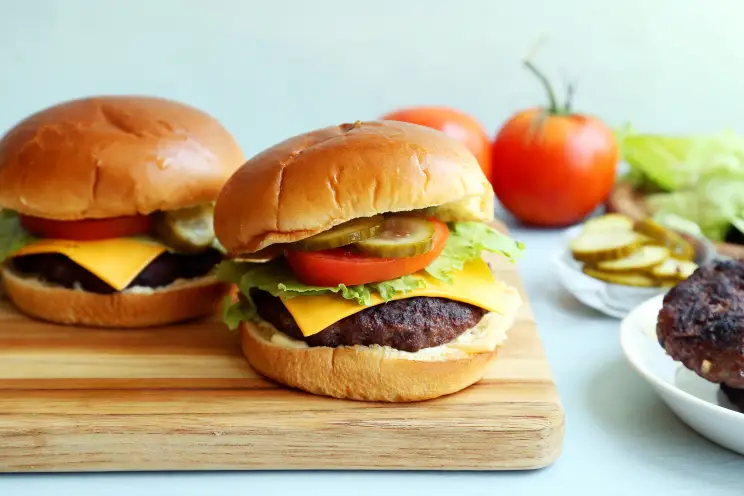

Back to Homepage
Hamburger Recipe

A simple hamburger (Recipe Source)
Ingredients:
- 907.18 g ground beef
- 1x egg (slightly beaten)
- 14.17 g of envelope dry onion soup mix (can use the whole package if desired)
- 29.58 ml of fresh minced garlic (or use 1 teaspoon garlic powder)
- 59.14 ml of dry breadcrumbs (or crushed soda cracker crumbs, more if needed) (optional)
- 14.79 ml of Worcestershire sauce
- 4.92 ml of fresh ground black pepper
- 14.79-29.58 ml Frank's red hot sauce (or 1-2 teaspoons crushed chili flakes, or can adjust to heat level) (optional)
Steps:
- In a bowl crumble the ground beef with clean hands.
- Add in the dry soup mix, egg, garlic, breadcrumbs or crushed soda cracker crumbs, Worcestershire sauce, black pepper and hot sauce (if using).
- Using clean hands mix until combined, add in more breadcrumbs or cracker crumbs if needed to just hold the mixture together (do not overwork the meat or it will be tough).
- Divide the ground beef into 6 equal patties (or make 8 small patties).
- Using your large finger or the back of a small spoon make a shallow dent into the center of each patty (about 1-inch wide).
- Place the patties onto a large plate or a small cookie sheet; cover with plastic wrap and refrigerate for a minimum of 6 hours or up to 24 hours to blend flavors.
- Grill or pan fry the burgers as desired until cooked through (if desired sprinkle a small amount of seasoned salt on top while cooking the patties).
- Serve burgers in toasted buns with choice of condiments.
- TIPS FOR EXTRA JUICINESS; shape the hamburger into a ball, press 1 tablespoon cold butter into the middle then seal the meat around the ball then flatten into burger shapes ----or add in 2-4 tablespoons raw finely grated potato into the hamburger mixture then shape into patties, use no more than 4 tablespoons for 2 pounds of ground beef or the burgers will take on a meatloaf texture.